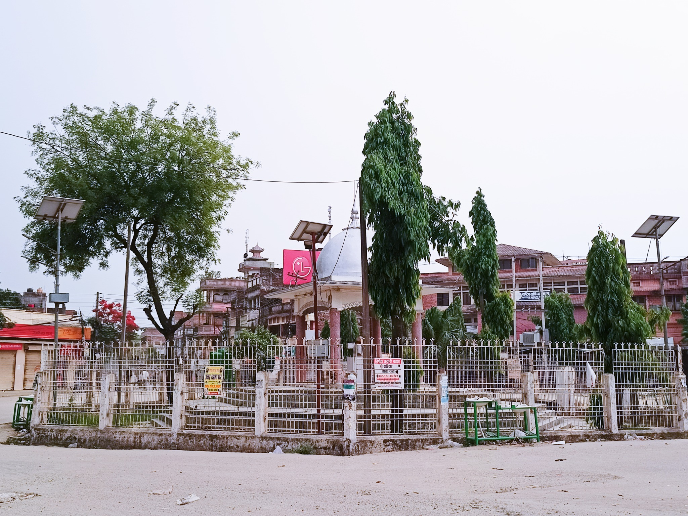
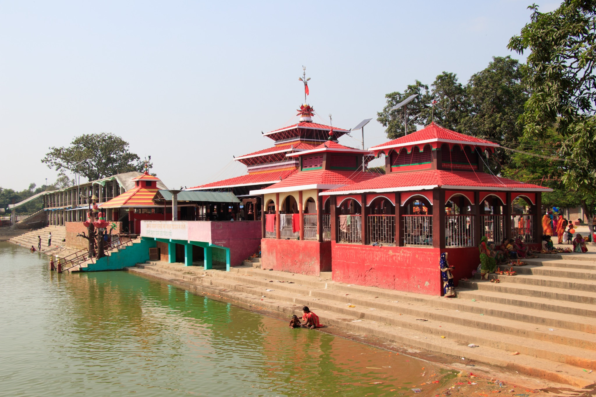
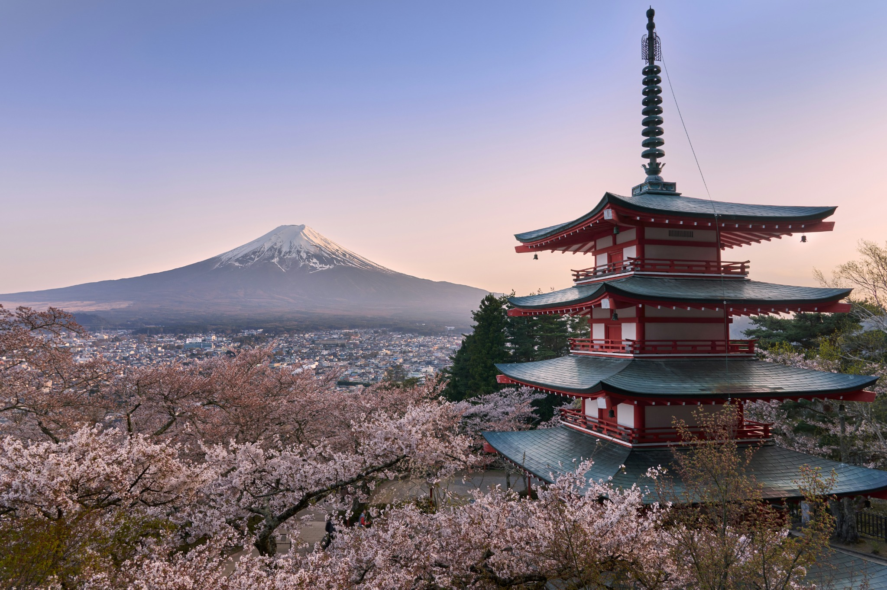
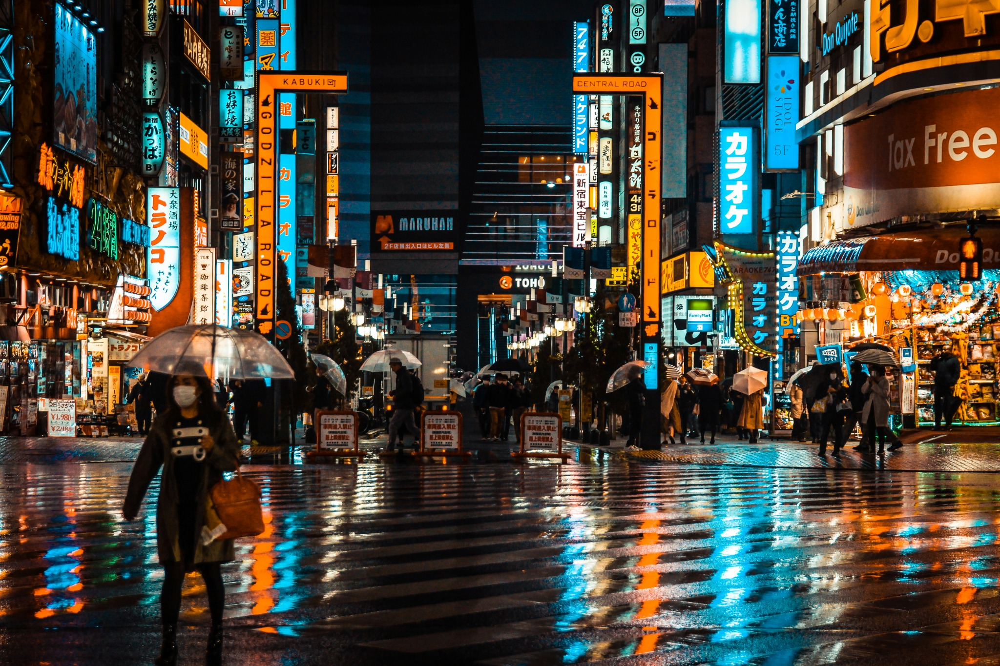

ABOUT ME
THE HUMAN BEHIND THE CODE
I'm Reshikesh Yadav: a curious mind who enjoys a good story, whether it comes from a film, an anime, a game, or a line of code. This website is my corner of the internet—a place to experiment, share work in progress, and show the person behind the assignments.

IDEAS INSIDE THE CLASSROOM
At Tokyo International University, I study Digital Business & Innovation in the English Track. One assignment might ask me to investigate trust in AI-generated advertising; another challenges me to turn a blank HTML file into an interactive webpage. I enjoy that mix of critical thinking, creativity, and practical problem-solving.

TWO WORLDS, ONE STORY
Rajbiraj, Saptari, is where the familiar sounds of home, family conversations, and celebrations shaped my early life. Japan has introduced a different rhythm: new routines, unfamiliar places, and everyday decisions I now make independently. I carry lessons from both places rather than choosing one over the other.
IDEAS I WANT TO BUILD
I want to create digital experiences that are genuinely useful and enjoyable to explore. Student friendly study tools, interactive websites, and community apps that connect people through games and conversation all interest me. My next goal is simple: turn small experiments into projects that someone else would actually want to use.
TWO WORLDS IN PICTURES
Different places, unforgettable stories. A glimpse of the two countries that shape my world.

RAJBIRAJ, NEPAL 🇳🇵
Where my story began.

SAPTARI HERITAGE 🇳🇵
Culture, traditions and memories.

JAPAN IN SPRING 🇯🇵
Beauty in every season.

TOKYO AFTER DARK 🇯🇵
A city full of energy and possibilities.